with AND, OR, NOT, four pairs of axioms (identity, commutativity, distributivity, complement) imply every identity used to shrink circuits — absorption
with AND, OR, NOT, four pairs of axioms (identity, commutativity, distributivity, complement) imply every identity used to shrink circuits — absorption Statement
A function
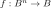
is given by its truth table ( rows) or by an expression; a vector function
rows) or by an expression; a vector function 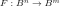
is scalar functions of the same inputs. AND binds tighter than OR:
scalar functions of the same inputs. AND binds tighter than OR: 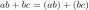
.Axioms (each with its dual, obtained by swapping
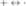
and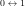
):- identity
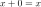
,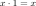
; commutativity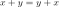
,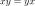
; - distributivity
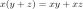
and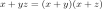
(the second one has no counterpart in ordinary arithmetic); - complement ,
 .
.
Theorems:
- null element
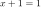
,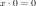
; idempotence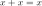
, ; involution
; involution 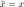
; associativity; - absorption
 ,
, 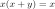
; - adjacency
 ,
, 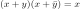
— the rule behind every Karnaugh group; - simplification
 ,
, 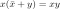
; - consensus
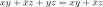
— the term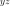
is redundant for the function but not for hazards; - De Morgan
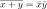
,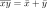
(also for variables).
variables).
Derived operators: NAND
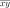
, NOR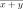
, XOR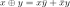
(1 when the inputs differ), XNOR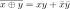
(equality).Derivation
Absorption from the axioms:
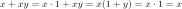
. Simplification: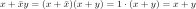
(second distributive law). Consensus: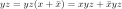
; the first term is absorbed by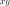
, the second by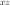
. Perfect induction: since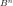
is finite, an identity is proved by comparing the two truth tables row by row.Completeness: every function has a canonical form in AND, OR, NOT, so
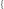
AND, OR, NOT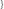
is complete. By De Morgan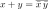
, so AND, NOT and OR, NOT are complete too. NAND alone: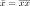
,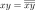
, ; dually NOR alone. Also XOR, AND with the constant 1 (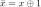
).Example
Specification → function: lower the awning (
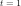
) if there is sun ( ) or the button is pressed (
) or the button is pressed ( ), unless there is too much wind (
), unless there is too much wind ( ):
): 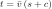
. Seat-belt light: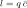
(dashboard on, belt not fastened).Simplify
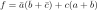
: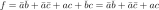
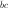
is the consensus of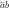
and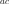
on ): 6 literals instead of 8.
): 6 literals instead of 8.
Intuition
Every rule says "these two circuits compute the same table"; algebra moves between them, the truth table is the referee.
Pitfall
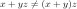
: the second distributive law needs the brackets on both sums,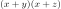
. And De Morgan negates the operator and every operand: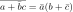
, not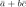
.